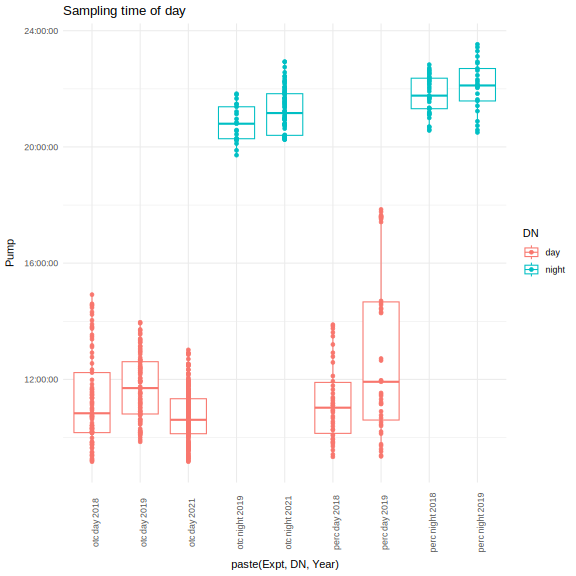
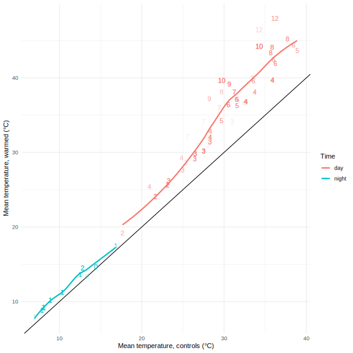
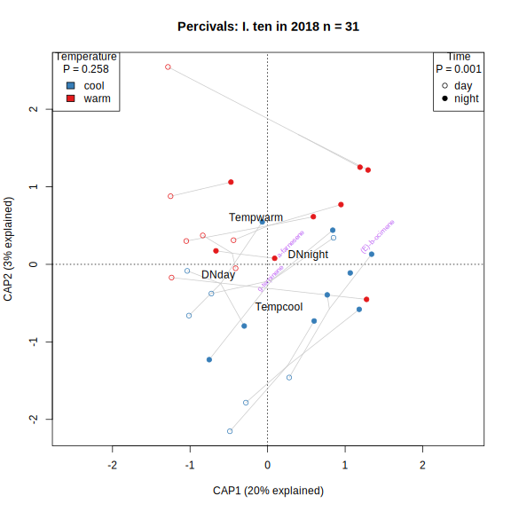
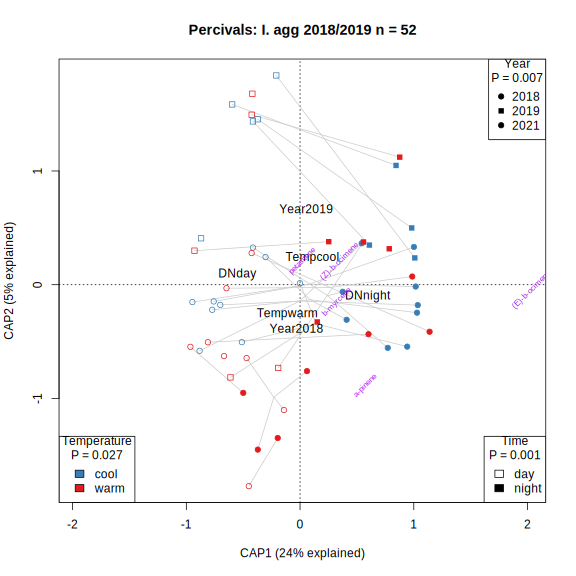
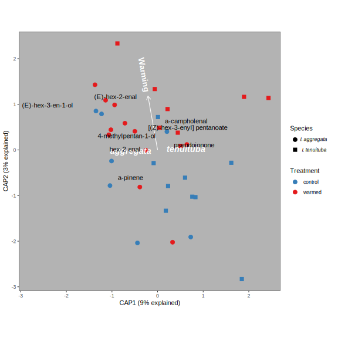

Ipomopsis temperature experiments
Carrie Wu, John Powers, David Hopp, Diane Campbell
2022-10-27
# setwd("/media/C/GCMSsolution/Data/heather Ipo/")
# data18 <- read.shimadzu("./Temperature expt CWu 2018/CWu2018.txt")
# data19 <- read.shimadzu("./Temperature expt CWu 2019/CWu2019..txt")
# ipo.data <- rbind(data18, data19)
#
# files.2021 <- c("Ihyb_VF_210718.txt", "Ihyb_VF_210719.txt", "Samples_210720.txt",
# "Ihyb_Corydalis_210728.txt", "Ihyb_Corydalis_210729.txt", "Ihyb_Corydalis_210730.txt", "Ihyb_Corydalis_210731.txt", "Maxfield_SC_210802b.txt",
# "Maxfield_SC_210803.txt", "SC_GNA_210804.txt", "Lupinus20_SC_Lagg21_210814.txt" ,"SC_210817.txt", "SC_210818.txt",
# "SC_210818b.txt", "SC_210818b001.txt", "SC_210820b.txt", "SC_Lagg_210821.txt" )
#
# library(tidyverse)
# setwd("~/MyDocs/MEGA/UCI/Schiedea/Analysis/scent/rmbl/RMBL Batches")
# ipo.data.2021 <- map_dfr(files.2021, read.shimadzu)
#
# ipo.data <- rbind(ipo.data, ipo.data.2021)
#
# save(ipo.data, file="CWu_181921.Rdata")
load("data/CWu_181921.Rdata")
ipo.all <- dcast(ipo.data, Filename~Name, sum, value.var="Area")
rownames(ipo.all) <- ipo.all[,1]
ipo.all[,1] <- NULL
ipo.cut <- ipo.all[,colSums(ipo.all)>4e6]
write(rownames(ipo.all), "data/CWu_samples.txt")
ipos <- read.csv("data/CWu_samples.csv", colClasses=list(RunDate="Date"))Overview - no metadata
Inventory
#TODO merge F, G, H, I, J into GNA for 2018
with(ipos, table(Year, Type)) Type
Year A Air Bake bb Blank F G GNA H I J NatArea OTC SC Schiedea T
2018 35 27 3 13 7 3 3 0 2 3 3 48 0 0 0 34
2019 29 21 0 0 10 0 0 19 0 0 0 0 53 27 18 27with(ipos, table(Type, DNLeaf)) DNLeaf
Type day leaf night
A 35 12 8 9
Air 31 9 0 8
Bake 3 0 0 0
bb 13 0 0 0
Blank 17 0 0 0
F 3 0 0 0
G 3 0 0 0
GNA 7 3 9 0
H 2 0 0 0
I 3 0 0 0
J 3 0 0 0
NatArea 48 0 0 0
OTC 10 15 19 9
SC 0 10 9 8
Schiedea 18 0 0 0
T 34 10 7 10NMDS
set.seed(1)
nmds.ipo <- metaMDS(decostand(ipo.cut, "hellinger"), dist="bray", autotransform = FALSE, try=5, trymax=5)
par(bg="grey40")
ordiplot(nmds.ipo, type = "n")
ipos$rs <- rowSums(ipo.all)
ipos$nameBlank <- ipos$Type %in% c("Blank","Bake")
ipos$nameAir <- ipos$Type == "Air"
thisyear <- ipos$Year == 2019
#with(ipos, points(nmds.ipo, display="sites", col=viridis(200)[round(200*sqrt(rs/max(rs)))], pch=as.integer(isblank)+1))
with(ipos, points(nmds.ipo, display="sites", col=rainbow(nlevels(ipos$Type))[ipos$Type], pch=as.integer(nameAir*2+nameBlank)+1))
#with(ipos, points(nmds.ipo, display="sites", col=rainbow(nlevels(ipos$Type))[ipos$Type], pch=ipos$Year-2017))
legend("topright", legend=levels(ipos$Type), fill=rainbow(nlevels(ipos$Type)), cex=0.8)Kmeans clustering
k <- 8
set.seed(1)
km <- kmeans(decostand(ipo.cut, "log"), k, nstart=3)
ipos$Cluster <- km$cluster
ipos$kBlank <- kblank <- km$cluster %in% c(4)
ipos$Mixup <- ipos$nameBlank != ipos$kBlank
with(ipos, table(kBlank, nameBlank))
ordiplot(nmds.ipo, type = "n")
points(nmds.ipo, display="sites", col=ifelse(kblank, "black", rainbow(k)[km$cluster]), pch=with(ipos,as.integer(nameAir*2+nameBlank))+1)
text(nmds.ipo, display="species",col="grey80",labels=ifelse(colSums(ipo.cut)>4e8, colnames(ipo.cut), ""))
text(nmds.ipo, display="sites", col=with(ipos, as.integer(thisyear)*4+as.integer(nameBlank)*2+as.integer(nameAir)+1), labels=as.character(km$cluster))CAP - blanks and years
ipo.cap <- capscale(ipo.cut ~ as.factor(ipos$kBlank) * as.factor(thisyear), distance="bray", metaMDSdist = F)
plot(ipo.cap, type="n")
points(ipo.cap, display="sites", col=ifelse(ipos$kBlank, "black", rainbow(k)[ipos$Cluster]), pch=as.integer(ipos$nameAir*2+ipos$nameBlank)+1)
#View(ipo.cap$CCA$v)CAP - DNLeaf
dnl <- ipos$DNLeaf!="" & ipos$Type !="Air"
ipo.cap.dnl <- capscale(ipo.cut[dnl,] ~ ipos[dnl,"DNLeaf"], distance="bray", metaMDSdist = F)
plot(ipo.cap.dnl, type="n")
points(ipo.cap.dnl, display="sites", pch=as.integer(ipos[dnl,"DNLeaf"])-1, col=as.integer(factor(ipos[dnl,"Type"])))
legend("bottomleft", levels(factor(ipos[dnl,"Type"])), fill=1:nlevels(ipos$Type), cex=0.8)
legend("left", levels(ipos[dnl,"DNLeaf"]), pch=1:nlevels(ipos[dnl,"DNLeaf"])-1, cex=0.8)
#View(ipo.cap.dnl$CCA$v)Read metadata
files <- read_tsv("data/CWu_samples_text2.csv")
perc <- read_tsv("data/Percivals2018_2019.csv")
otc <- read_tsv("data/OTC2018_2019.csv")
sc21 <- read_tsv("data/2021 Spring Creek Volatiles - 2021.tsv") %>%
mutate(PlantType=if_else(plant=="air", "air", "ten"))
gna21 <- read_tsv("data/2021 GNA Volatiles - 2021.tsv") %>%
mutate(time="day", PlantType=if_else(plant=="air", "air", "agg"))
library(stringr)
files21 <- tibble(Filename = rownames(ipo.all)) %>%
filter(str_detect(Filename, "2021"),
str_detect(Filename, "SC_|GNA_")) %>%
separate(Filename, into=c("site","vial","sampledate","rundate","GCn"), sep="_", remove=FALSE, convert=TRUE) %>%
mutate(GCn = str_remove(GCn, ".qgd"))
#write_tsv(files21, "files21.tsv")
files21 <- read_tsv("data/files21.tsv")
perc2 <- left_join(perc,files, by=c("Date","DN","Tissue","Sample2"), suffix=c("",".f"))
otc2 <- left_join(otc,files, by=c("Date","Site","OI","DN","Tissue","Sample2"), suffix=c("",".f")) %>%
mutate(PlantType = if_else(OI == "air", "air", PlantType))
drop2021 <- c("SC_126_210727_8182021_04.qgd", "SC_101_210727_8202021_02.qgd", "GNA_121_210730_7312021_05.qgd")#don't include these
otc21 <- bind_rows(SC=sc21, GNA=gna21, .id="site") %>%
left_join(files21, by=c("vial","site")) %>%
filter(!Filename %in% drop2021 | is.na(Filename)) %>%
mutate(sampledate = as.character(sampledate),
Year = 2021, Tissue = if_else(plant == "air", "air", "flower"), Expt="otc") %>%
rename(Site=site, Collector=observer, Date=date, DN=time, OI=location, Bag=bag, Pump=pump, End=end, Equil=equil, Duration=pumping,
NumFlrs = flowers, NumBuds=buds, PumpID = pump_id, SoilVWC = VWC, Comments = notes, SampleDate_text=sampledate,
RunDate_text=rundate,GCOrder=GCn)
#TODO find missing chromatogram files (6) and missing metdata (4)
#otc21 %>% filter(is.na(FileName), is.na(lost))
library(forcats)
meta <- bind_rows(otc=bind_rows(otc2, otc21), perc=perc2, .id="expt") %>%
mutate_if(is.character, as.factor) %>%
mutate(Equil=Pump-Bag, Duration=End-Pump, Total=End-Bag,
OI = fct_collapse(OI, "in" = c("in", "inside"), out = c("out","outside")),
Pump_datehour = paste(Date, Pump) %>% ymd_hms(tz="America/Denver") %>% round_date("hour")) %>%
#Add mean temperature of OTCs or controls at time of sampling
left_join(read_csv("data/hobos_mean.csv") %>% select(-date) %>%
mutate(datetime = force_tz(datetime, "America/Denver")),
by = c("Site"="site", "Pump_datehour"="datetime")) %>%
mutate(mean_temp_C_treatment = if_else(OI=="in", mean_temp_C_OTC, mean_temp_C_control))
meta %>% write.csv("data/CWu_meta21.csv")
meta %>% count(Year, Temp, Tissue, PlantType, OI, DN, Expt)# A tibble: 64 × 8
Year Temp Tissue PlantType OI DN Expt n
<dbl> <fct> <fct> <fct> <fct> <fct> <fct> <int>
1 2018 cool air air <NA> day perc 4
2 2018 cool air air <NA> night perc 4
3 2018 cool flower agg <NA> day perc 10
4 2018 cool flower agg <NA> night perc 9
5 2018 cool flower ten <NA> day perc 8
6 2018 cool flower ten <NA> night perc 9
7 2018 warm air air <NA> day perc 4
8 2018 warm air air <NA> night perc 4
9 2018 warm flower agg <NA> day perc 8
10 2018 warm flower agg <NA> night perc 7
# … with 54 more rowsMissing files
#perc2 %>% filter(is.na(Filename)) %>% select("n") %>% write.csv("perc_nomatch.csv")
#otc2 %>% filter(is.na(Filename)) %>% select("n") %>% write.csv("otc_nomatch.csv")
meta %>% filter(is.na(Filename) & nomatch!="NR") %>% select(1:24) %>% kable| expt | n | Year | Date | DN | Site | PlantType | Tissue | OI | Sample | Sample2 | nomatch | Bag | Pump | End | NumFlrs | NumBuds | NumLeaf | PumpID | SoilVWC | SoilDepth | Comments | Collector | LeafDryWtGrams |
|---|---|---|---|---|---|---|---|---|---|---|---|---|---|---|---|---|---|---|---|---|---|---|---|
| otc | 184 | 2018 | 2018-07-25 | day | GNA | agg | flower | in | KM10-B1 | KM10B1 | 0 | 10:13:00 | 10:43:00 | 10:58:00 | 1 | 0 | NA | DRC5 | 3.7 | 1.171 | NA | Rachel | NA |
| otc | 37 | 2019 | 2019-07-31 | day | GNA | agg | flower | in | OTC-W1 | W1 | 0 | 11:53:00 | 12:26:00 | 12:41:00 | 1 | 0 | 0 | CW2 | 8.6 | 1.258 | NA | Carrie | NA |
| otc | 83 | 2019 | 2019-08-02 | day | SC | ten | leaf | in | OTC-A2-leaf | A2 | 0 | 12:50:00 | 13:20:00 | 13:35:00 | NA | NA | 1 | . | NA | NA | NA | Carrie | 0.01030 |
| otc | 84 | 2019 | 2019-08-02 | day | SC | ten | leaf | in | OTC-C3-leaf | C3 | 0 | 13:08:00 | 13:41:00 | 13:56:00 | NA | NA | 1 | CW2 | NA | NA | NA | Carrie | 0.00829 |
| otc | 65 | 2019 | 2019-08-02 | day | SC | ten | leaf | in | OTC-E1-leaf | E1 | 0 | 09:42:00 | 10:12:00 | 10:27:00 | NA | NA | 1 | CW2 | 6.1 | 1.191 | NA | Carrie | 0.00849 |
| otc | 5 | 2019 | 2019-08-02 | night | SC | ten | flower | out | SC9 | 9 | 0 | 20:21:00 | 20:51:00 | 21:06:00 | 1 | 0 | 0 | CW2 | NA | NA | NA | Diane | NA |
| perc | 47 | 2019 | 2019-07-25 | night | NA | agg | flower | NA | A79 | A79 | nm | 21:02:00 | 21:35:00 | 21:50:00 | 1 | 0 | NA | CW2 | NA | NA | NA | Carrie | NA |
Missing metadata
#files %>% filter(!(Filename %in% meta$Filename)) %>% select("n") %>% write.csv("CWu_samples_nomatch.csv")
files %>% filter(!(Filename %in% meta$Filename) & Expt!="") %>% select(c("Filename", "Date","Site","OI","DN","Tissue","Sample2")) %>% kable| Filename | Date | Site | OI | DN | Tissue | Sample2 |
|---|---|---|---|---|---|---|
| AirlastJuly25_08312018.qgd | 2018-07-25 | GNA | air | day | air | Airlast |
| NatAreaXUP01July25_08312018.qgd | 2018-07-25 | GNA | in | day | flower | XUP01 |
| GNA5redo_leaf_190805_8112019_17.qgd | 2019-08-05 | GNA | out | day | leaf | 5redo |
| A188DredoAug16renamed_09022018.qgd | 2018-08-16 | NA | NA | day | flower | A188redo |
| T196DredoAug16_09022018.qgd | 2018-08-16 | NA | NA | day | flower | T196redo |
| A38redo_day_190725_872019_03.qgd | 2019-07-25 | NA | NA | day | flower | A38redo |
| A91_leaf_190725_882019_02.qgd | 2019-07-25 | NA | NA | day | leaf | A91 |
Times
ggplot(meta, aes(x=paste(Expt, DN,Year), y=Bag, color=DN)) +
geom_boxplot() + geom_point()+
theme_minimal() + theme(axis.text.x=element_text(angle=90))+
ggtitle("Sampling time of day")
ggplot(meta, aes(x=paste(Expt, DN,Year), y=Total/60, color=DN)) +
geom_boxplot() + geom_point()+
theme_minimal() + theme(axis.text.x=element_text(angle=90)) +
ggtitle("Total sampling duration")+
ylab("Equilibration plus pumping time (min)")
#TODO fix timingsOTC Soil moisture
ggplot(meta %>% filter(Expt=="otc", OI !="air"), aes(x=paste(Year, Site, OI), y=SoilVWC, color=OI)) +
geom_boxplot()+#geom_violin(draw_quantiles=c(0.25, 0.5, 0.75)) +
geom_point()+
theme_minimal() + theme(axis.text.x=element_text(angle=90)) +
scale_color_brewer(palette = "Set1")+
ggtitle("Effects of OTCs on Soil Moisture")+
ylab("Soil Volumetric Water Content (%)") +
xlab("Year, in or out of the OTC")
ggplot(meta %>% filter(Expt=="otc", OI !="air"), aes(x=paste(Year, Site, OI, SampleDate_text), y=SoilVWC, color=OI)) +
geom_boxplot()+#geom_violin(draw_quantiles=c(0.25, 0.5, 0.75)) +
geom_point()+
theme_minimal() + theme(axis.text.x=element_text(angle=90)) +
scale_color_brewer(palette = "Set1")+
ggtitle("Effects of OTCs on Soil Moisture")+
ylab("Soil Volumetric Water Content (%)") +
xlab("Year, in or out of the OTC, Date")
OTC temperature during sampling
ggplot(meta %>% filter(Expt=="otc", OI !="air"), aes(y=mean_temp_C_treatment, x=paste(Year, Site, OI), color=OI)) +
facet_wrap(vars(DN), scales="free_x")+
geom_boxplot()+#geom_violin(draw_quantiles=c(0.25, 0.5, 0.75)) +
geom_jitter(height=0, width=0.2)+
theme_minimal() + theme(axis.text.x=element_text(angle=90)) +
scale_color_brewer(palette = "Set1")+
ggtitle("Effects of OTCs on Temperature during Sampling")+
ylab("Temperature (C)") +
xlab("Year, in or out of the OTC")
ggplot(meta %>% filter(Expt=="otc", OI !="air", PlantType=="agg"), aes(y=mean_temp_C_treatment, x=paste(Year, Site, OI), color=OI)) +
facet_wrap(vars(Year), scales="free_x", nrow=1)+
geom_boxplot()+#geom_violin(draw_quantiles=c(0.25, 0.5, 0.75)) +
geom_jitter(height=0, width=0.2)+
theme_minimal() + theme(axis.text.x=element_text(angle=90)) +
scale_color_brewer(palette = "Set1")+
ggtitle("Effects of OTCs on Temperature during Sampling: I agg.")+
ylab("Temperature (C)") +
xlab("Year, in or out of the OTC")
Filtering criteria
sv <- meta %>% drop_na(Filename)
ipo.gc <- ipo.all[sv$Filename,]
library(bouquet)
ipo.data.cut <- ipo.data[ipo.data$Filename %in% sv$Filename,]
ipo.data.cut$Filename <- sv$Filename[match(ipo.data.cut$Filename, sv$Filename)]
ipo.data.cut <- ipo.data.cut[ipo.data.cut$Name != "", ] #drop unidentified peaks
ipo.data.cut$Name <- droplevels(ipo.data.cut$Name)
longdata <- load_longdata(ipo.data.cut, sample="Filename", RT="Ret.Time", name="Name", area="Area", match = "SI", maxmatch=100)
metadata <- sv %>% mutate(Tissue = fct_recode(Tissue, ambient="air", floral="flower", leaf="leaf")) %>%
load_metadata(date="Date", sample="Filename", group="PlantType", type="Tissue")
vol.all <- make_sampletable(longdata, metadata)
chems <- make_chemtable(longdata, metadata)
### Flower filtering
chemsf <- chems %>%
filter_RT(2, 17) %>%
filter_match(0.8) %>%
filter_freq(0.05, group = FALSE) %>%
filter_contaminant(cont.list = c("Cyclotetrasiloxane, octamethyl-")) %>%
filter_area(min_maximum = 5e5) %>%
filter_ambient_ratio(vol.all, metadata, ratio = 3) %>%
filter_ambient_ttest(vol.all, metadata, alpha = 0.05, adjust = "fdr") %>%
combine_filters()
chemsf$filter_final <- with(chemsf, filter_RT == "OK" & filter_match =="OK" & filter_freq.floral == "OK" & filter_area == "OK" &
(filter_ambient_ratio == "OK" | filter_ambient_ttest == "OK") & filter_contaminant == "OK")
bouquet::plot_filters(chemsf, option="rarity")
bouquet::plot_filters(chemsf, option="ambient")
bouquet::plot_filters(chemsf, option="prop")### Leaf filtering
meta.leaf <- metadata %>% mutate(type = fct_recode(type, floral = "leaf", flower = "floral")) #trick bouquet to think the leaf samples are floral TODO: hacky!
chems.leaf <- make_chemtable(longdata, meta.leaf)
chemsf.leaf <- chems.leaf %>%
filter_RT(2, 17) %>%
filter_match(0.8) %>%
filter_freq(0.1, group = FALSE) %>%
filter_contaminant(cont.list = c("Caprolactam")) %>%
filter_area(min_maximum = 5e5) %>%
filter_ambient_ratio(vol.all, meta.leaf, ratio = 4) %>%
filter_ambient_ttest(vol.all, meta.leaf, alpha = 0.05, adjust = "fdr") %>%
combine_filters()
chemsf.leaf$filter_final <- with(chemsf.leaf, filter_RT == "OK" & filter_match =="OK" & filter_freq.floral == "OK" & #floral are actually leafs
filter_area == "OK" & (filter_ambient_ratio == "OK" | filter_ambient_ttest == "OK") & filter_contaminant == "OK")
bouquet::plot_filters(chemsf.leaf, option="rarity")bouquet::plot_filters(chemsf.leaf, option="ambient")
bouquet::plot_filters(chemsf.leaf, option="prop")
#compare amounts in floral vs. leaf samples
chemsf <- chemsf %>% mutate(filter_ambient_leaf_ratio = chemsf.leaf$filter_ambient_ratio,
filter_ambient_leaf_ttest = chemsf.leaf$filter_ambient_ttest,
leaf_not_flower = filter_ambient_leaf_ratio=="OK" & filter_ambient_leaf_ttest=="OK" &
!(filter_ambient_ratio=="OK" & filter_ambient_ttest=="OK"))
ggplot(chemsf, aes(x=mean.floral, y= chemsf.leaf$mean.floral, label=name, color=paste(filter_final,chemsf.leaf$filter_final, sep=", "),
alpha=filter_final|chemsf.leaf$filter_final))+ theme_minimal()+
geom_abline(slope=1, intercept=1) + geom_text()+ scale_x_log10()+ scale_y_log10() +
labs(x="Mean area in flowers", y= "Mean area in leaves", alpha="Kept in either dataset", color="Kept in floral, leaf datasets")
### Manual filtering
#write.csv(chemsf, "chemsf_ipo.csv")
#annotated this in a google sheet
chemsf2 <- read.csv("data/Ipo volatile compounds - chemsf_ipo.csv.csv")
keep <- as.character(chemsf2[chemsf2$verdict %in% c("fvoc","keep","merge","keep-leaf"),"name"])
#keep_leaf <- as.character(chemsf2[chemsf2$verdict =="keep_leaf","name"]) # > 4 | chemsf3$name %in% keep_leaf)
#shorten names
shortnames <- chemsf2 %>% select(name, shortname) %>% filter(shortname!="") %>% deframe()
chemsf3 <- chemsf %>%
filter_contaminant(cont.list=as.character(chemsf2[chemsf2$verdict %in% c("ambi","bis14","cont","rare"),"name"])) %>%
mutate(filter_final_leaf = filter_contaminant == "OK" & chemsf.leaf$filter_final, #& chemsf2$shortname!=""#four big alkanes
name = recode(name, !!!shortnames))
#chemsf3$filter_final <- with(chemsf3, filters_passed > 4 & filter_contaminant == "OK" & name %in% keep)#keeps with passed<=4 still excluded
colnames(vol.all) <- chemsf3$name
#TODO merge the duplicate name2s - the following doesn't work
#longdata3 <- longdata %>% inner_join(chemsf3 %>% select(c("name", "name2")), by = "name") %>%
#mutate(name = factor(name2))
#vol.all3 <- make_sampletable(longdata3)
#vol <- prune_sampletable(vol.all, chemsf3, metadata)
#TODO use chesf3 (manual list instead)
vol <- prune_sampletable(vol.all, chemsf3, metadata)
files_exclude <- c("T196DAug16_09012018.qgd", "A188DAug16_09012018.qgd", "OTC_Z3_190805_8102019_24.qgd", "T139_day_190725_862019_06.qgd", "GNA_17_210716_7202021_18.qgd")#no filtered volatiles
svf <- metadata[metadata$type == "floral" & !(metadata$sample %in% files_exclude),]
svf$Year <- factor(svf$Year)
svf <- svf %>% mutate_if(is.factor, droplevels)
svf$Treat <- factor(paste(svf$OI,svf$Temp))
levels(svf$Treat) <- c("warm or in","cool or out", "warm or in","cool or out")
vol <- vol[!(rownames(vol) %in% files_exclude) ,]
vol <- vol / 0.75 / 1 #30 min of equilibration plus 15 minpumping, one flower
#TODO fix svf$Total data entry errors
vol.leaf <- prune_sampletable(vol.all, chemsf3 %>% mutate(filter_final=filter_final_leaf), meta.leaf)
files_exclude_leaf <- c("CWH1LeafJuly27_09022018.qgd","NatArea69leafrenamedJuly25_08312018.qgd", "T164_leaf_190731_882019_18.qgd","OTC_Z2_leaf_190805_8102019_23.qgd")#fist two lack leaf mass, secodn two have no filtered volatiles
svl <- metadata[metadata$type == "leaf" & !(metadata$sample %in% files_exclude_leaf),]
svl <- svl %>% mutate_if(is.factor, droplevels)
svl$Treat <- factor(paste(svl$OI,svl$Temp))
levels(svl$Treat) <- c("warm or in","cool or out", "warm or in","cool or out")
vol.leaf <- vol.leaf[!(rownames(vol.leaf) %in% files_exclude_leaf) ,]
svl$LeafDryWtGrams[c(44,3)] <- svl$LeafDryWtGrams[c(44,3)]/10
vol.leaf <- vol.leaf / 0.75 / svl$LeafDryWtGrams #area per hour per dry gram
#TODO fix svf$Total data entry errors for leaves
#save.image("ipo_workspace.Rdata")#load("ipo_workspace.Rdata")Flower heatmap
#cairo_pdf("ipo_heatmap.pdf", width=12, height=12)
ph <- pheatmap(as.matrix(t(vol))^(1/3),
cluster_cols=T, show_colnames=F,
clustering_method="mcquitty", clustering_distance_rows="correlation",
clustering_distance_cols=vegdist(vol, method = "bray"),
clustering_callback = function(hc, ...){dendsort(hc, type="average")},
scale="none", color=inferno(512),
annotation_col = data.frame(svf %>% select("Year", "PlantType", "expt", "Treat","DN"), row.names=rownames(vol)),
fontsize = 10, border_color = NA, legend=F, annotation_legend=T, cutree_rows=6
)
#dev.off()NMDS of all filtered samples
set.seed(1)
nmds.vol <- metaMDS(sqrt(vol), dist="bray", autotransform = FALSE)Run 0 stress 0.2467949
Run 1 stress 0.2603531
Run 2 stress 0.2573374
Run 3 stress 0.2701483
Run 4 stress 0.2609948
Run 5 stress 0.2617537
Run 6 stress 0.2617161
Run 7 stress 0.248576
Run 8 stress 0.2475131
Run 9 stress 0.2494744
Run 10 stress 0.2473919
Run 11 stress 0.2619902
Run 12 stress 0.2459568
... New best solution
... Procrustes: rmse 0.01118646 max resid 0.118593
Run 13 stress 0.2467131
Run 14 stress 0.2477781
Run 15 stress 0.2721085
Run 16 stress 0.2491943
Run 17 stress 0.264099
Run 18 stress 0.2506986
Run 19 stress 0.2590878
Run 20 stress 0.2564991
*** No convergence -- monoMDS stopping criteria:
8: no. of iterations >= maxit
12: stress ratio > sratmaxTEY <- with(svf, factor(paste(PlantType,expt,Year)))
TEYcols <- brewer.pal(9, "Paired")#[c(1:4,8,5:6)]
spcols <- c(agg="red", ten="violet")
ordiplot(nmds.vol, type = "n")
text(nmds.vol, display="species", cex=0.7, col="grey20")
points(nmds.vol, display="sites", col=TEYcols[TEY], pch=c(13,19)[svf$DN])
points(nmds.vol, display="sites", col=spcols[svf$PlantType], pch=c(13,19)[svf$DN])
points(nmds.vol, display="sites", col=svf$Year, pch=c(13,19)[svf$DN])
legend("topleft", levels(svf$DN), pch=c(13,19))
legend("topright", levels(svf$PlantType), fill=spcols)
legend("bottomright", levels(svf$Year), fill=1:3)
#points(nmds.vol, display="sites", col=viridis(100)[sqrt(rowSums(vol))/100], pch=19)
legend("bottomleft", levels(TEY), fill=TEYcols, cex=0.9)
OTCs vs. Ambient
CAP analysis of each OTC site and year
#inventory of samples
with(svf %>% filter(expt=="otc"), table(paste(PlantType, DN, OI),Year, Site)), , Site = bb
Year
2018 2019 2021
agg day in 13 0 0
agg day out 13 0 0
ten day in 0 0 0
ten day out 0 0 0
ten night in 0 0 0
ten night out 0 0 0
, , Site = GNA
Year
2018 2019 2021
agg day in 30 12 32
agg day out 16 10 26
ten day in 0 0 0
ten day out 0 0 0
ten night in 0 0 0
ten night out 0 0 0
, , Site = SC
Year
2018 2019 2021
agg day in 0 0 0
agg day out 0 0 0
ten day in 0 11 42
ten day out 0 10 30
ten night in 0 9 39
ten night out 0 8 29plot.otc <- function(svf.otc, plot.DN=F, plot.chems=T) {
vol.otc <- vol[svf.otc$sample,]
cap.otc <- capscale(sqrt(vol.otc) ~ OI, distance="bray", data=svf.otc)
if(plot.DN) cap.otc <- capscale(sqrt(vol.otc) ~ DN+OI, distance="bray", data=svf.otc)
summ.cap <- summary(cap.otc)
prop.expl <- summ.cap$cont$importance
ax.labs <- paste0(colnames(prop.expl)[1:2], " (",round(100*prop.expl[2,1:2]),"% explained)")
anova.cap <- anova(cap.otc, by="term")
plot(cap.otc, type="n", xlim=range(cap.otc$CCA$wa[,1]), xlab=ax.labs[1], ylab=ax.labs[2])
with(svf.otc, title(paste("OTC warming:","I.",unique(PlantType), "at", unique(Site),"site,",unique(Year),
do.call(paste0, list(unique(DN), collapse="/")))))
legend("topleft", title=paste("OTC warming","P =",anova.cap["OI","Pr(>F)"]),
levels(svf.otc$OI), fill=2:3)
if(plot.DN) legend("topright", title=paste("Time","P =",anova.cap["DN","Pr(>F)"]),
levels(svf.otc$DN), pch=c(1,19))
points(cap.otc, display="sites", col=c(2:3)[svf.otc$OI], pch=c(1,19)[svf.otc$DN])
text(cap.otc, display="cn")
if(plot.chems) {
if(plot.DN) text(cap.otc, display="species", cex=0.8, srt=45,
col=ifelse(sqrt(cap.otc$CCA$v[,1]^2 + cap.otc$CCA$v[,2]^2)>0.25, alpha("purple",1),alpha("purple",0)))
else text(cap.otc, display="species", cex=0.8, srt=45,
col=ifelse(abs(cap.otc$CCA$v[,1])>0.1, alpha("purple",1),alpha("purple",0)))
}
return(cap.otc)
}
cap.otcbb18 <- plot.otc(svf %>% filter(expt=="otc",Year=="2018",Site=="bb",PlantType=="agg"))
cap.otcGNA18 <- plot.otc(svf %>% filter(expt=="otc",Year=="2018",Site=="GNA",PlantType=="agg"))
cap.otcGNA19 <- plot.otc(svf %>% filter(expt=="otc",Year=="2019",Site=="GNA",PlantType=="agg"))
cap.otcGNA21 <- plot.otc(svf %>% filter(expt=="otc",Year=="2021",Site=="GNA",PlantType=="agg"))
cap.otcSC19 <- plot.otc(svf %>% filter(expt=="otc",Year=="2019",Site=="SC",PlantType=="ten"),plot.DN=T)
cap.otcSC21 <- plot.otc(svf %>% filter(expt=="otc",Year=="2021",Site=="SC",PlantType=="ten"),plot.DN=T)
#cap.otc.all <- list(bb18=cap.otcbb18, GNA18=cap.otcGNA18, GNA19=cap.otcGNA19, SC19=cap.otcSC19)CAP of all I. aggregata vs. OTCs
#Combined I. aggregata OTC CAP
svf.otc <- svf %>% filter(expt=="otc", PlantType=="agg")
vol.otc <- vol[svf.otc$sample,]
(cap.otc.comb <- capscale(sqrt(vol.otc) ~ Year+Site+OI, distance="bray", data=svf.otc))Call: capscale(formula = sqrt(vol.otc) ~ Year + Site + OI, data =
svf.otc, distance = "bray")
Inertia Proportion Rank
Total 34.6143 1.0000
Constrained 5.0357 0.1455 4
Unconstrained 37.1562 1.0734 69
Imaginary -7.5776 -0.2189 82
Inertia is squared Bray distance
Species scores projected from 'sqrt' 'vol.otc'
Eigenvalues for constrained axes:
CAP1 CAP2 CAP3 CAP4
2.3666 1.9312 0.4481 0.2899
Eigenvalues for unconstrained axes:
MDS1 MDS2 MDS3 MDS4 MDS5 MDS6 MDS7 MDS8
4.310 3.474 2.736 2.060 1.724 1.560 1.433 1.308
(Showing 8 of 69 unconstrained eigenvalues)summ.cap <- summary(cap.otc.comb)
prop.expl <- summ.cap$cont$importance
ax.labs <- paste0(colnames(prop.expl)[1:2], " (",round(100*prop.expl[2,1:2]),"% explained)")
yearpch <- c(`2018`=15,`2019`=19,`2021`=17)
(anova.cap <- anova(cap.otc.comb, by="term"))Permutation test for capscale under reduced model
Terms added sequentially (first to last)
Permutation: free
Number of permutations: 999
Model: capscale(formula = sqrt(vol.otc) ~ Year + Site + OI, data = svf.otc, distance = "bray")
Df SumOfSqs F Pr(>F)
Year 2 4.181 8.2701 0.001 ***
Site 1 0.481 1.9012 0.016 *
OI 1 0.374 1.4813 0.053 .
Residual 147 37.156
---
Signif. codes: 0 '***' 0.001 '**' 0.01 '*' 0.05 '.' 0.1 ' ' 1plot(cap.otc.comb, type="n",xlim=range(cap.otc.comb$CCA$wa[,1]), xlab=ax.labs[1], ylab=ax.labs[2])
title("OTC warming: I. agg at GNA or bb sites, 2018/2019")
legend("topleft", title=paste("OTC warming","P =",anova.cap["OI","Pr(>F)"]), legend=levels(svf.otc$OI), fill=2:3)
legend("topright", title=paste("Year","P =",anova.cap["Year","Pr(>F)"]), legend=levels(svf.otc$Year), pch=yearpch)
legend("bottomleft", title=paste("Site","P =",anova.cap["Site","Pr(>F)"]), legend=unique(svf.otc$Site)[1:2])
text(cap.otc.comb, display="species", cex=0.7, srt=45,
col=ifelse(sqrt(cap.otc.comb$CCA$v[,1]^2 + cap.otc.comb$CCA$v[,2]^2)>0.25, alpha("purple",0.7),alpha("purple",0)))
points(cap.otc.comb, display="sites", col=c(2:3)[svf.otc$OI], pch=yearpch[svf.otc$Year])
text(cap.otc.comb, display="cn")
CAP of all I. aggregata vs. actual temp, site, year
#Combined I. aggregata OTC CAP
svf.otc <- svf %>% filter(expt=="otc", PlantType=="agg") %>% drop_na(mean_temp_C_treatment)
vol.otc <- vol[svf.otc$sample,]
(cap.otc.comb <- capscale(sqrt(vol.otc) ~ Year+Site+OI+mean_temp_C_treatment, distance="bray", data=svf.otc))Call: capscale(formula = sqrt(vol.otc) ~ Year + Site + OI +
mean_temp_C_treatment, data = svf.otc, distance = "bray")
Inertia Proportion Rank
Total 32.5579 1.0000
Constrained 5.0500 0.1551 5
Unconstrained 34.5056 1.0598 67
Imaginary -6.9977 -0.2149 77
Inertia is squared Bray distance
Species scores projected from 'sqrt' 'vol.otc'
Eigenvalues for constrained axes:
CAP1 CAP2 CAP3 CAP4 CAP5
2.4058 1.5015 0.5775 0.3439 0.2215
Eigenvalues for unconstrained axes:
MDS1 MDS2 MDS3 MDS4 MDS5 MDS6 MDS7 MDS8
4.001 3.269 2.634 2.002 1.551 1.449 1.340 1.235
(Showing 8 of 67 unconstrained eigenvalues)summ.cap <- summary(cap.otc.comb)
prop.expl <- summ.cap$cont$importance
ax.labs <- paste0(colnames(prop.expl)[1:2], " (",round(100*prop.expl[2,1:2]),"% explained)")
(anova.cap <- anova(cap.otc.comb, by="term"))Permutation test for capscale under reduced model
Terms added sequentially (first to last)
Permutation: free
Number of permutations: 999
Model: capscale(formula = sqrt(vol.otc) ~ Year + Site + OI + mean_temp_C_treatment, data = svf.otc, distance = "bray")
Df SumOfSqs F Pr(>F)
Year 2 3.752 7.5574 0.001 ***
Site 1 0.479 1.9277 0.008 **
OI 1 0.329 1.3245 0.122
mean_temp_C_treatment 1 0.491 1.9761 0.007 **
Residual 139 34.506
---
Signif. codes: 0 '***' 0.001 '**' 0.01 '*' 0.05 '.' 0.1 ' ' 1par(bg="grey40")
plot(cap.otc.comb, type="n",xlim=range(cap.otc.comb$CCA$wa[,1]), xlab=ax.labs[1], ylab=ax.labs[2])
title("OTC actual temp: I. agg at GNA or bb sites, all years\nvol ~ Year+Site+OI+temp")
temprange <- round(c(max(svf.otc$mean_temp_C_treatment), min(svf.otc$mean_temp_C_treatment)))
legend("topleft", title=paste("Temperature\n","P =",anova.cap["mean_temp_C_treatment","Pr(>F)"]), legend=paste(temprange, " C"), fill=rev(viridis(2)))
legend("topright", title=paste("Year\n","P =",anova.cap["Year","Pr(>F)"]), levels(svf.otc$Year), pch=yearpch)
legend("bottomright", title=paste("Site\n","P =",anova.cap["Site","Pr(>F)"]), legend=unique(svf.otc$Site)[1:2])
legend("left", title=paste("OTC warming\n","P =",anova.cap["OI","Pr(>F)"]), levels(svf.otc$OI))
text(cap.otc.comb, display="species", cex=0.7, srt=45,
col=ifelse(sqrt(cap.otc.comb$CCA$v[,1]^2 + cap.otc.comb$CCA$v[,2]^2)>0.25, alpha("pink",0.7),alpha("pink",0)))
points(cap.otc.comb, display="sites", col=inferno(32)[round(svf.otc$mean_temp_C_treatment)-7], pch=yearpch[svf.otc$Year])
text(cap.otc.comb, display="cn", col="white")
CAP of all I. aggregata vs. actual temp, year
#Combined I. aggregata OTC CAP
svf.otc <- svf %>% filter(expt=="otc", PlantType=="agg") %>% drop_na(mean_temp_C_treatment)
vol.otc <- vol[svf.otc$sample,]
(cap.otc.comb <- capscale(sqrt(vol.otc) ~ Year+mean_temp_C_treatment, distance="bray", data=svf.otc))Call: capscale(formula = sqrt(vol.otc) ~ Year + mean_temp_C_treatment,
data = svf.otc, distance = "bray")
Inertia Proportion Rank
Total 32.5579 1.0000
Constrained 4.1718 0.1281 3
Unconstrained 35.3838 1.0868 67
Imaginary -6.9977 -0.2149 77
Inertia is squared Bray distance
Species scores projected from 'sqrt' 'vol.otc'
Eigenvalues for constrained axes:
CAP1 CAP2 CAP3
2.3194 1.4615 0.3908
Eigenvalues for unconstrained axes:
MDS1 MDS2 MDS3 MDS4 MDS5 MDS6 MDS7 MDS8
4.070 3.387 2.739 2.009 1.605 1.504 1.350 1.255
(Showing 8 of 67 unconstrained eigenvalues)summ.cap <- summary(cap.otc.comb)
prop.expl <- summ.cap$cont$importance
ax.labs <- paste0(colnames(prop.expl)[1:2], " (",round(100*prop.expl[2,1:2]),"% explained)")
(anova.cap <- anova(cap.otc.comb, by="term"))Permutation test for capscale under reduced model
Terms added sequentially (first to last)
Permutation: free
Number of permutations: 999
Model: capscale(formula = sqrt(vol.otc) ~ Year + mean_temp_C_treatment, data = svf.otc, distance = "bray")
Df SumOfSqs F Pr(>F)
Year 2 3.752 7.4759 0.001 ***
mean_temp_C_treatment 1 0.420 1.6722 0.025 *
Residual 141 35.384
---
Signif. codes: 0 '***' 0.001 '**' 0.01 '*' 0.05 '.' 0.1 ' ' 1par(bg="grey40")
plot(cap.otc.comb, type="n", xlab=ax.labs[1], ylab=ax.labs[2])
title("OTC actual temp: I. agg at GNA or bb sites, all years\n vol ~ temp")
temprange <- round(c(max(svf.otc$mean_temp_C_treatment), min(svf.otc$mean_temp_C_treatment)))
legend("bottomleft", title=paste("Temperature\n","P =",anova.cap["mean_temp_C_treatment","Pr(>F)"]), legend=paste(temprange, " C"), fill=rev(viridis(2)))
legend("topright", title=paste("Year\n","P =",anova.cap["Year","Pr(>F)"]), levels(svf.otc$Year), pch=yearpch)
text(cap.otc.comb, display="species", cex=0.7, srt=45,
col=ifelse(abs(cap.otc.comb$CCA$v[,1])>0.1, alpha("pink",0.7),alpha("pink",0)))
points(cap.otc.comb, display="sites", col=inferno(32)[round(svf.otc$mean_temp_C_treatment)-7], pch=yearpch[svf.otc$Year])
text(cap.otc.comb, display="cn", col="white")
Percivals warm vs. cool
CAP analysis of each Percival dataset
#inventory of samples
with(svf %>% filter(expt=="perc"), table(paste(PlantType, DN, Temp),Year)) Year
2018 2019 2021
agg day cool 9 5 0
agg day warm 8 6 0
agg night cool 9 4 0
agg night warm 7 5 0
ten day cool 7 5 0
ten day warm 8 4 0
ten night cool 9 5 0
ten night warm 8 5 0plot.perc <- function(svf.perc, plot.chems=T) {
vol.perc <- vol[svf.perc$sample,]
cap.perc <- capscale(sqrt(vol.perc) ~ DN+Temp, distance="bray", data=svf.perc)
summ.cap <- summary(cap.perc)
prop.expl <- summ.cap$cont$importance[2,c("CAP1","CAP2")]
ax.labs <- paste0("CAP", 1:2, " (",round(100*prop.expl),"% explained)")
anova.cap <- anova(cap.perc, by="term")
plot(cap.perc, type="n", xlim=range(cap.perc$CCA$wa[,1]), xlab=ax.labs[1], ylab=ax.labs[2])
with(svf.perc, title(paste0("Percivals: I. ", unique(PlantType)," in ", unique(Year))))
#, " (",round(100*summ.cap$constr.chi / summ.cap$tot.chi),"% explained)")
legend("topleft", title=paste("Temperature","P =",anova.cap["Temp","Pr(>F)"]),
levels(svf.perc$Temp), fill=c(4,2))
legend("topright", title=paste("Time","P =",anova.cap["DN","Pr(>F)"]),
levels(svf.perc$DN), pch=c(1,19))
if(plot.chems) text(cap.perc, display="species", cex=0.7, srt=45,
col=ifelse(sqrt(cap.perc$CCA$v[,1]^2 + cap.perc$CCA$v[,2]^2)>0.25, alpha("purple",0.7),alpha("purple",0)))
points(cap.perc, display="sites", col=c(4,2)[svf.perc$Temp], pch=c(1,19)[svf.perc$DN])
text(cap.perc, display="cn")
return(cap.perc)
}
cap.perc.agg18 <- plot.perc(svf %>% filter(expt=="perc",Year=="2018",PlantType=="agg"))
cap.perc.agg19 <- plot.perc(svf %>% filter(expt=="perc",Year=="2019",PlantType=="agg"))
cap.perc.ten18 <- plot.perc(svf %>% filter(expt=="perc",Year=="2018",PlantType=="ten"))
cap.perc.ten19 <- plot.perc(svf %>% filter(expt=="perc",Year=="2019",PlantType=="ten"))
#cap.perc.all <- list(agg18=cap.perc.agg18, agg19=cap.perc.agg19, ten18=cap.perc.ten18, ten19=cap.perc.ten19)
#lapply(cap.perc.all, anova, by="term")CAP of Percival dataset combined for each species
plot.perc.comb <- function(svf.perc, plot.chems=F) {
vol.perc <- vol[svf.perc$sample,]
cap.perc.comb <- capscale(sqrt(vol.perc) ~ Year+DN+Temp, distance="bray", data=svf.perc)
summ.cap <- summary(cap.perc.comb)
prop.expl <- summ.cap$cont$importance[2,c("CAP1","CAP2")]
ax.labs <- paste0("CAP", 1:2, " (",round(100*prop.expl),"% explained)")
anova.cap <- anova(cap.perc.comb, by="term")
plot(cap.perc.comb, type="n", xlim=range(cap.perc.comb$CCA$wa[,1]), xlab=ax.labs[1], ylab=ax.labs[2])
title(paste("Percivals: I.",unique(svf.perc$PlantType), "2018/2019"))
legend("bottomleft", title=paste("Temperature","P =",anova.cap["Temp","Pr(>F)"]), levels(svf.perc$Temp), fill=c(4,2))
legend("bottomright", title=paste("Time","P =",anova.cap["DN","Pr(>F)"]), levels(svf.perc$DN), fil=c(0,1))
legend("topright", title=paste("Year","P =",anova.cap["Year","Pr(>F)"]), levels(svf.perc$Year), pch=c(19,15))
points(cap.perc.comb, display="sites", col=c(4,2)[svf.perc$Temp], pch=c(1,0,19,15)[factor(paste(svf.perc$DN, svf.perc$Year))])
text(cap.perc.comb, display="cn")
text(cap.perc.comb, display="species", cex=0.7, srt=45, col=ifelse(sqrt(cap.perc.comb$CCA$v[,1]^2 + cap.perc.comb$CCA$v[,2]^2)>0.2, alpha("purple",1),alpha("purple",0)))
return(cap.perc.comb)
}
svf.perc.agg <- plot.perc.comb(svf %>% filter(expt=="perc", PlantType=="agg"))
svf.perc.ten <- plot.perc.comb(svf %>% filter(expt=="perc", PlantType=="ten"))
#svf.perc.both <- plot.perc.comb(svf %>% filter(expt=="perc"))Barplots
vols.plot <- chemsf3 %>% filter(filter_final, freq.floral>0.21) %>% pull("name") %>% as.character
#vols.plot[vols.plot=="b-caryophyllene"] <- "b-caryophyllene.1"#c("b-ocimene","a-pinene","a-farnesene","b-caryophyllene.1","petasitene","b-myrcene","longifolene","tridec-1-ene ","benzophenone")
vol.long <- gather(cbind(sample=rownames(vol[,vols.plot]), total=rowSums(vol), vol[,vols.plot]), key="chem",value="area", 2:(length(vols.plot)+2), factor_key=T)
vol.plot <- left_join(vol.long, svf)
specDNcols <- c( "#943390","#FF5056", "#A894FF","#FC8C97")
#Treatcols <- c("#DA9E18","#6B744F")
DNcols <- c("grey90","grey20")
ggplot(drop_na(vol.plot, PlantType, expt),#TODO track down NAs
aes(x=paste(PlantType,expt),y=area, fill=DN, color=paste(PlantType,Treat))) +
geom_boxplot(size=1, position=position_dodge2(preserve="single")) +
facet_wrap(vars(chem), scales="free") +
scale_y_sqrt("Peak area per flower per hour") +
scale_color_manual("Species, Treatment", values=specDNcols) +
scale_fill_manual("Time of day",values=DNcols) +
theme_minimal() + theme(axis.text.x=element_text(angle=20, vjust=0.5))
Leaf volatiles
Inventory
Dropped 2 samples from 2018 without leaf mass. Volatiles units are peak area per hour per gram dry leaf.
with(svl, table(PlantType, Treat, expt)), , expt = otc
Treat
PlantType warm or in cool or out
agg 10 8
ten 9 9
, , expt = perc
Treat
PlantType warm or in cool or out
agg 4 4
ten 2 3Heatmap
#cairo_pdf("ipo_heatmap_leaf.pdf", width=12, height=12)
ph_leaf <- pheatmap(as.matrix(t(vol.leaf))^(1/3),
cluster_cols=T, show_colnames=F,
clustering_method="mcquitty", clustering_distance_rows="correlation",
clustering_distance_cols=vegdist(vol.leaf, method = "bray"),
clustering_callback = function(hc, ...){dendsort(hc, type="average")},
scale="none", color=inferno(512),
annotation_col = data.frame(svl %>% select("PlantType", "expt", "Treat"), row.names=rownames(vol.leaf)),
fontsize = 10, border_color = NA, legend=F, annotation_legend=T, cutree_rows=6
)
#dev.off()CAP - OTCs
svl.otc <- svl %>% filter(expt=="otc")
cap.leaf <- capscale(sqrt(vol.leaf[svl$expt=="otc",]) ~ PlantType+OI, distance="bray", data=svl.otc)
summ.cap <- summary(cap.leaf)
prop.expl <- summ.cap$cont$importance[2,c("CAP1","CAP2")]
ax.labs <- paste0("CAP", 1:2, " (",round(100*prop.expl),"% explained)")
(anova.cap <- anova(cap.leaf, by="term"))Permutation test for capscale under reduced model
Terms added sequentially (first to last)
Permutation: free
Number of permutations: 999
Model: capscale(formula = sqrt(vol.leaf[svl$expt == "otc", ]) ~ PlantType + OI, data = svl.otc, distance = "bray")
Df SumOfSqs F Pr(>F)
PlantType 1 0.8052 4.3733 0.001 ***
OI 1 0.1578 0.8573 0.570
Residual 33 6.0758
---
Signif. codes: 0 '***' 0.001 '**' 0.01 '*' 0.05 '.' 0.1 ' ' 1plot(cap.leaf, type="n", xlim=range(cap.leaf$CCA$wa[,1]), xlab=ax.labs[1], ylab=ax.labs[2])
title(paste("OTCs: I. agg and I. ten leaves 2019"))
legend("bottomleft", title=paste("Temperature","P =",anova.cap["OI","Pr(>F)"]), levels(svl.otc$OI), fill=c(3,2))
legend("bottomright", title=paste("Species","P =",anova.cap["PlantType","Pr(>F)"]), levels(svl.otc$PlantType), pch=c(19,15))
points(cap.leaf, display="sites", col=c(3,2)[svl.otc$OI], pch=c(19,15)[svl.otc$PlantType])
text(cap.leaf, display="cn")
text(cap.leaf, display="species", cex=0.7, col=ifelse(sqrt(cap.leaf$CCA$v[,1]^2 + cap.leaf$CCA$v[,2]^2)>0.2, alpha("purple",1),alpha("purple",0)))
CAP - Percivals
svl.perc <- svl %>% filter(expt=="perc")
cap.leaf.perc <- capscale(sqrt(vol.leaf[svl$expt=="perc",]) ~ PlantType+Temp, distance="bray", data=svl.perc)
summ.cap <- summary(cap.leaf.perc)
prop.expl <- summ.cap$cont$importance[2,c("CAP1","CAP2")]
ax.labs <- paste0("CAP", 1:2, " (",round(100*prop.expl),"% explained)")
(anova.cap <- anova(cap.leaf.perc, by="term"))Permutation test for capscale under reduced model
Terms added sequentially (first to last)
Permutation: free
Number of permutations: 999
Model: capscale(formula = sqrt(vol.leaf[svl$expt == "perc", ]) ~ PlantType + Temp, data = svl.perc, distance = "bray")
Df SumOfSqs F Pr(>F)
PlantType 1 0.12034 0.3907 0.913
Temp 1 0.24633 0.7998 0.529
Residual 10 3.07996